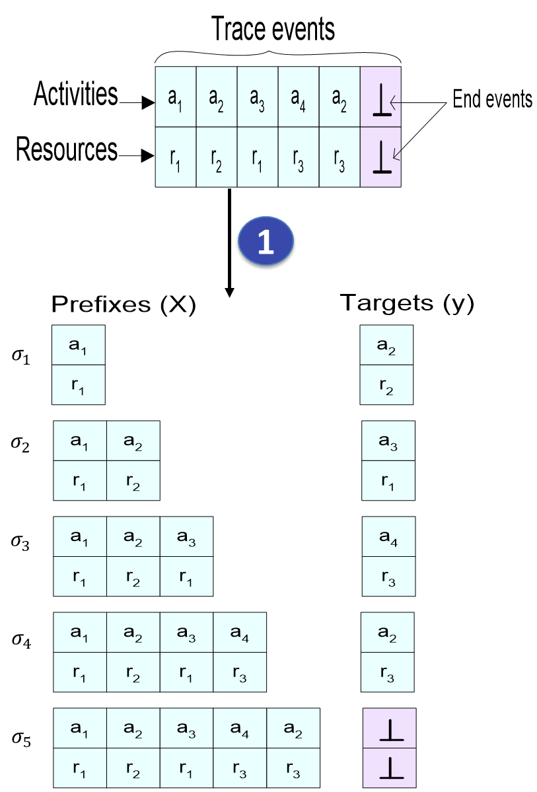

1
code
Prefixes Extraction
Extract prefixes and targets
2
dataset
Prefix Encoding
Convert prefixes to numeric vectors
3
psychology
NN Training
Train neural network model

filter_1
One-Hot Encoding
Binary vector representation for activities and resources
filter_2
Index-Based Encoding
Numeric indices for activities and resources
filter_3
Shrinked Index-Based
Joint index for activity-resource pairs
filter_4
Multi-Encoders
Separate embeddings with modulated representations
filter_1
LSTM
filter_2
Transformer